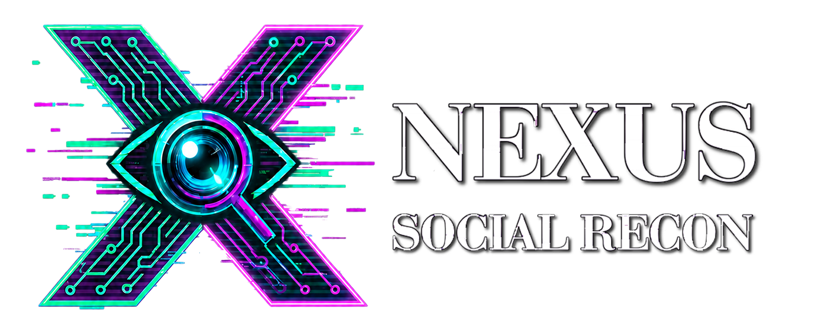
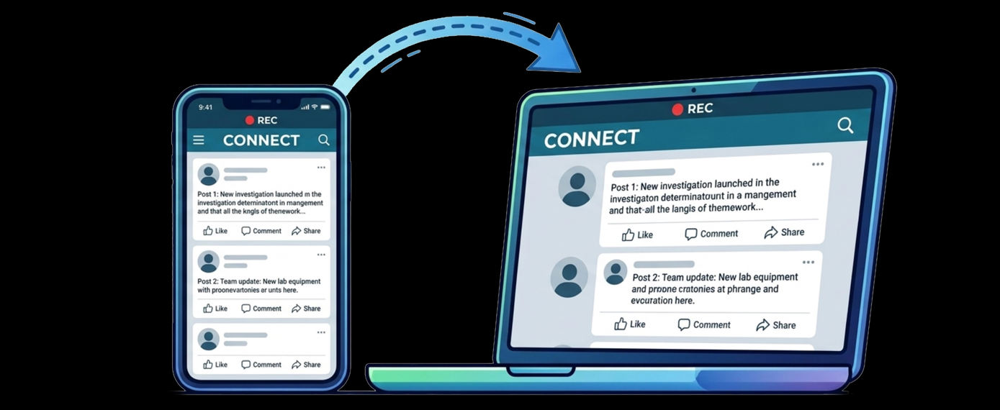

Preserve the source
Capture public pages, media, comments, links, timestamps, screenshots, and local files before online content changes or disappears.
Public Evidence Intelligence Software
Nexus Forensics builds tools for investigators who need public-source evidence to stay preserved, understandable, and ready for review. Our products keep source links, local captures, hashes, OCR text, media, comments, and investigator notes connected inside defensible case packages.
What Nexus Forensics Does
The company sits between legal web preservation, OSINT identity analysis, and forensic lab tooling. We focus on investigator-controlled workflows that preserve the source while making evidence easier to understand.
Capture public pages, media, comments, links, timestamps, screenshots, and local files before online content changes or disappears.
Use OCR, media review, account context, bookmarks, target checks, and visual comparison to help the investigator see why a lead matters.
Create readable reports with source URLs, local paths, thumbnails, notes, hashes, and companion media folders kept together.
Product Family
Each product is built around a specific evidence problem: social platforms, time-coded video, and image-centered witness material.

Preserve public social evidence with profiles, posts, comments, media, OCR, visual matches, targets, and case reports.
Review long video sources with time-coded notes, clips, still frames, transcripts, hashes, and timeline reports.
Video Anchor: $399/user/year
Video Anchor Pro: $1,499/user/year

Record phone cameras, phone screens, and gallery media from the computer, with forensic case reports, hashes, and audit logs.
Evidence Principles
Nexus Forensics products are designed to keep case material reviewable by the people who must explain it later.
Evidence stays connected to public URLs, local captures, media folders, and capture notes.
Workstation workflows keep investigators in control of case files, exports, hashes, and review packages.
Alerts and matches should show thumbnails, links, local paths, confidence, and context.
Shared indexes, governance, and managed processing can support larger deployments where needed.
Deployment Direction
The product roadmap supports local capture, investigator intelligence, encrypted cross-case indexes, small-team NAS deployments, on-prem repositories, managed processing, and on-demand case work.
Talk to Nexus Forensics about social evidence capture, video review, image witness documentation, and investigator-controlled evidence packages.